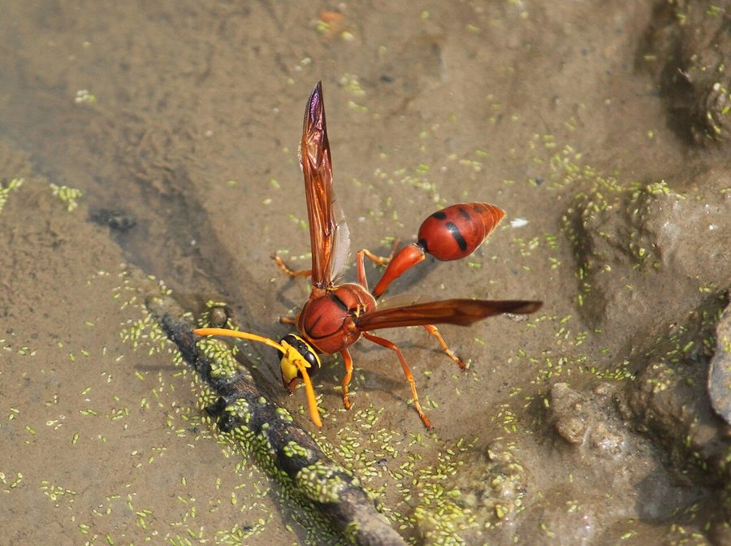

कुम्हार बर्रPotter Wasp
Delta conoideum · Eumenidae · INS-0090

- Scientific nameवैज्ञानिक नाम
- Delta conoideum (Fabricius, 1781)
- Familyकुल
- Eumenidae
- Hindiहिंदी
- कुम्हार बर्र
- Local namesस्थानीय नाम
- kumhar barra, kumhar ki barra, kumhaar wasp
- Status hereयहाँ की स्थिति
- native
- Movementआवागमन
- Resident, here all year
- IUCNIUCN
- not evaluated
- Reviewसमीक्षा
- audited and independently read
When to look कब देखें
Expected mainly in March, April, May, June, July, August, September, October.मुख्यतः मार्च, अप्रैल, मई, जून, जुलाई, अगस्त, सितंबर, अक्टूबर में अपेक्षित।
Uses and possibilities उपयोग और संभावनाएँ
Drawn from the documented uses in the profile below, where each is labelled traditional, current or a research lead. All uses →
कुम्हार बर्र / Potter Wasp
Delta conoideum (Fabricius, 1781) — Eumenidae
कुम्हार बर्र — पूर्वी उत्तर प्रदेश के गाँवों में घरों और खेतों की दीवारों पर एक छोटी, भूरे-काले रंग की बर्र है। इसका नाम इसके अद्भुत घोंसले से आता है, जो एक छोटे मिट्टी के घड़े जैसा दिखता है — इसीलिए इसे "कुम्हार" की बर्र कहते हैं। यह अकेली बर्र है: कोई दूसरी बर्र इसके साथ नहीं रहती। यह अपने बच्चों के लिए छोटे कीड़े, खासकर कैटरपिलर को पकड़कर लाती है। किसान के लिए यह एक महत्वपूर्ण मित्र है।
Quick Identification त्वरित पहचान
| Feature | Description |
|---|---|
| Size | Small to medium solitary wasp; body length 9–13 mm |
| Colour | Black to dark brown body with reddish-brown or yellow markings on the abdomen |
| Body shape | Robust, compact body; moderately long legs |
| Nest | Distinctive urn-shaped mud nest, resembling a small clay pot with a narrow entrance; attached to walls or eaves |
| Behaviour | Solitary; females build nests alone and provision them individually |
Field tip: Look for small urn-shaped mud nests on walls of houses, sheds, or village structures during spring and summer. The wasp is generally docile and does not defend its nest aggressively unless very closely approached.
हिंदी — कैसे पहचानें: छोटी बर्र, काली या भूरी, जिसके पेट पर सुनहरी या पीली धारियाँ हों। दीवार पर छोटे घड़े जैसा मिट्टी का घोंसला।
Morphology आकारिकी
Biometrics:
| Measurement | Range |
|---|---|
| Body length | 9–13 mm |
| Wingspan | 18–25 mm |
Body structure: Black to dark brown body with dense, fine pubescence. The head is broad with large compound eyes. The abdomen carries yellow or reddish-brown markings, typically on segments 1–2. Antennae are relatively short and filiform. The legs are dark with pale tarsi.
Sexual dimorphism: Females are slightly larger and more robust than males. Males have longer antennae.
Behaviour & Ecology व्यवहार और पारिस्थितिकी
A solitary wasp that exhibits remarkable architectural behaviour. The female selects a suitable site on a wall or structure, gathers mud from nearby ditches or puddles, and constructs a neat, single-chambered urn-shaped nest. Each nest contains one to three cells. Once the pot is complete, she provisions it with paralysed caterpillars and small insect larvae, lays a single egg, and seals the entrance. Unlike social wasps, she never returns to the nest.
The nests are used as overwintering sites by other insects and parasitoids, making them ecologically important microhabitats.
हिंदी: यह बर्र अकेली रहती है। मादा मिट्टी से छोटा घड़ा बनाती है, उसमें कैटरपिलर डालती है, अंडा देती है, और फिर इसे भूल जाती है।
Life Cycle / Phenology जीवन चक्र
| Stage / Season | Event |
|---|---|
| March–April | Females emerge and begin nest construction |
| April–May | Nests are provisioned and eggs laid |
| May–July | Larvae develop, feeding on paralysed prey |
| July–August | Pupation occurs inside sealed cells |
| August–October | New adults emerge |
| November–February | Overwintering stage; dormant in sealed mud cells |
हिंदी: बसंत में घड़ा बनना शुरू करती है, गर्मी में अंडे देती है, शरद ऋतु में बच्चे निकलते हैं।
Host Plants or Prey आहार
- Larvae: Paralysed caterpillars and small lepidopteran larvae, including leaf-rolling caterpillars and sawfly larvae.
- Adults: Nectar, pollen, and plant juices from various flowering plants.
Predators / Natural Enemies शत्रु
- Parasitoid wasps: Chrysidid wasps and ichneumonids parasitize the larvae within sealed cells.
- Nest robbers: Flies and small beetles may deposit eggs in unguarded nests.
- Predatory flies: Robber flies attack flying wasps.
Agricultural / Human Relevance कृषि प्रासंगिकता
Natural pest control. The Potter Wasp is a valuable ally in integrated pest management. By preying on caterpillars of crop pests, including those that damage vegetables and field crops, it reduces damage without chemical intervention. Farmers who preserve mud-walled structures and avoid excessive pesticide use benefit from its presence.
No sting threat: Females are extremely docile and rarely sting unless handled roughly. Males lack stingers entirely.
हिंदी: किसान के लिए दोस्त है क्योंकि यह फसलों को नुकसान पहुँचाने वाले कीड़े खाती है।
Expected Locally स्थानीय रूप से अपेक्षित
Not a field record. Written from published accounts for eastern Uttar Pradesh. No confirmed local sighting yet — if you have seen it, that is what the atlas needs.
अभी तक स्थानीय पुष्टि नहीं। यह विवरण प्रकाशित स्रोतों से है, किसी अवलोकन से नहीं।
Expected in villages where mud-walled houses and agricultural structures are common. The urn-shaped nests are visible on the walls of houses, cattle sheds, and farm buildings throughout the warm season. A photograph of the characteristic mud nest, showing the vessel shape and entrance hole, would confirm a local record.
Distribution वितरण
Global range: Found across Asia, from India through Southeast Asia and into the Pacific region.
In India: Widespread in agricultural areas and villages throughout the plains.
In Uttar Pradesh: Common resident in rural areas with suitable nesting habitat.
In Basti district / eastern UP: Expected in all agricultural zones with traditional mud-walled structures.
Research Questions शोध प्रश्न
- How many caterpillars does a single Potter Wasp nest contain when sealed? — Collect an abandoned sealed nest and gently break it open to count.
- Do Potter Wasps prefer mud from specific locations (ditches, ponds, or field margins)? / क्या कुम्हार बर्र मिट्टी के किसी विशेष स्रोत को पसंद करती है? — Mark several mud sources and observe which are visited.
- What is the parasitism rate of Potter Wasp nests by parasitoid wasps in the region? — Collect sealed nests and observe what emerges.
- How does wall height or orientation affect nest-building site selection? — Document the locations of nests on different wall types and aspects.
- Can farmers create artificial nesting blocks to support Potter Wasp populations in their fields? — Design and test mud blocks with pre-made cavities.
Similar Species मिलती-जुलती प्रजातियाँ
| Species | How to tell apart | हिंदी |
|---|---|---|
| Eumenes coarctatus (Mason Wasp) | Slightly smaller (7–10 mm); nest is rounder and smoother; lacks the distinct urn shape | छोटा, गोल घोंसला |
| Odynerus spinipes (Spiny Potter Wasp) | Larger; more robust legs; nest has thicker walls | बड़ा, मजबूत घोंसला |
Field rule: Small, urn-shaped mud nest on a wall, resembling a tiny clay pot with a narrow circular entrance opening: Potter Wasp.
Taxonomy & Classification वर्गीकरण
Original description. Fabricius described the Potter Wasp as Vespa conoidea in 1781 in Species Insectorum (Vol. 1, p. 479). The type locality was India. It was later placed in the genus Delta. The genus name Delta refers to the triangular shape of certain structures, and conoideum (cone-shaped) refers to the shape of the nest.
Subspecies. Monotypic — no subspecies are currently recognised.
Family and order placement. Order Hymenoptera, family Eumenidae (potter and mason wasps), subfamily Eumeninae.
Phylogenetic notes. The Eumenidae represent a lineage of solitary wasps that diverged from social Vespidae and retained the primitive solitary condition, exhibiting remarkable nest-building behaviour.
IUCN status rationale. Not evaluated. Highly abundant with no conservation concerns.
Photo Gallery फोटो गैलरी
Photos needed आवश्यक फोटो
- [ ] Adult wasp on a wall or mud surface (वयस्क बर्र)
- [ ] Mud nest showing urn shape and entrance hole (मिट्टी का घड़ा)
- [ ] Wasp provisioning a nest or collecting mud (मिट्टी ले जाती हुई बर्र)
No photos yet — add field photos to media/species/potter_wasp/ and run node scripts/sync_photos.js.
References संदर्भ
- Fabricius, J.C. (1781). Species Insectorum. Vol. 1, p. 479. Bohn, Hamburg. [original description as Vespa conoidea]
- Bingham, C.T. (1897). The Fauna of British India, including Ceylon and Burma. Hymenoptera. Vol. 1. Taylor and Francis, London.
- Bohart, R.M. & Menke, A.S. (1976). North American Eumenidae (Hymenoptera). University of California Press, Berkeley.
- Spradbery, J.P. (1973). Wasps: An Account of the Biology and Natural History of Solitary and Social Wasps. University of Washington Press.
- Mani, M.S. (1968). General Entomology. Oxford & IBH Publishing Co., New Delhi.
- GBIF Occurrence Data — Delta conoideum, India (2026).
Source file: species/fauna/insects/potter_wasp.md